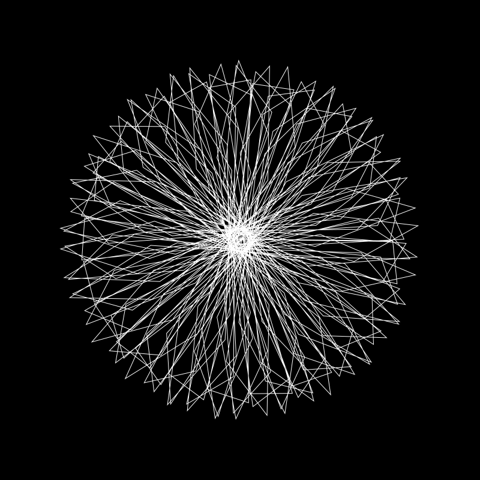
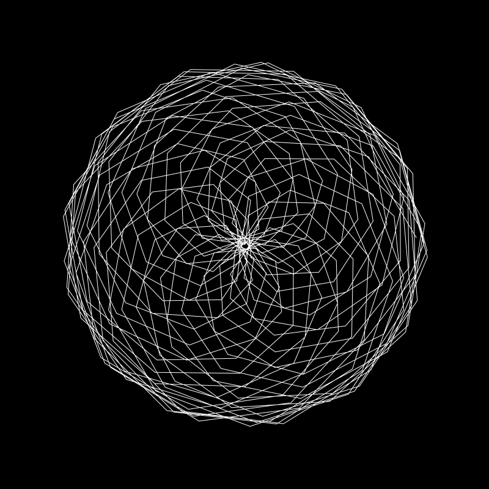
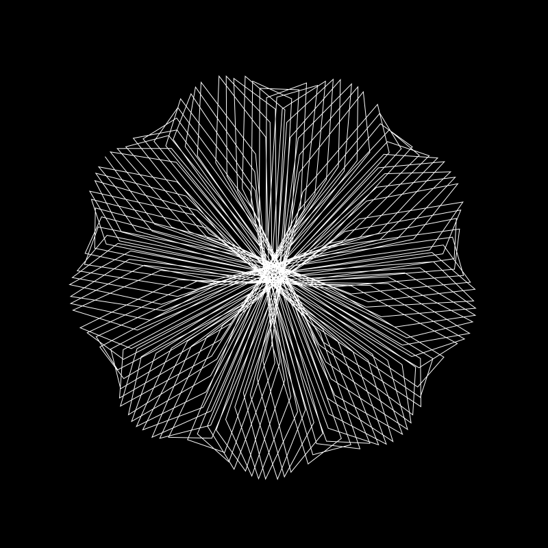
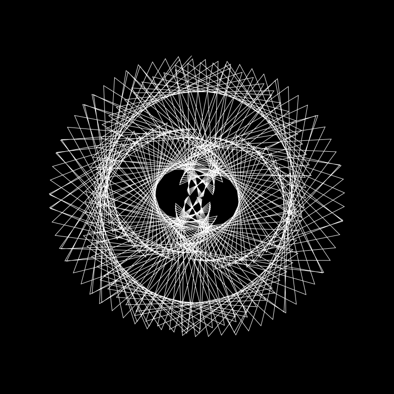
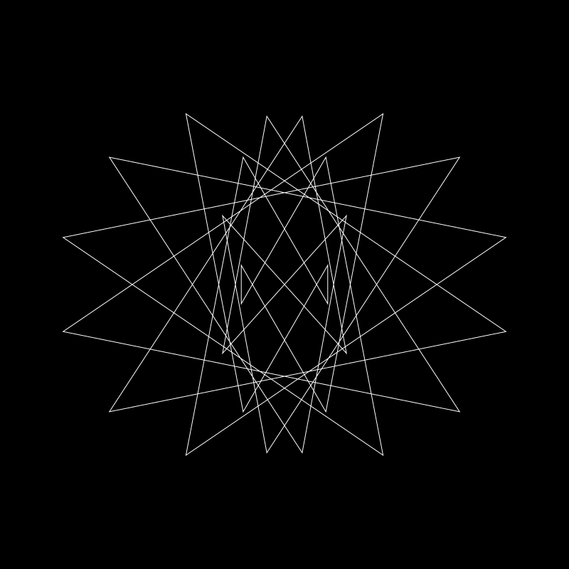

In this article, I will show you how to create a Maurer Rose SVG generator using the library p5.js from the Processing foundation. First of all, I want to mention that most of the code I used is strongly inspired by a tutorial of Daniel Shiffman. The library p5.js aims to provide a tool for making coding in the context of "visual art" more accessible for artists, designers and everybody else interested in this topic.
Blog
Maurer Rose Collection (Part 1)





Maurer Rose Minimal Collection (Part 2)
